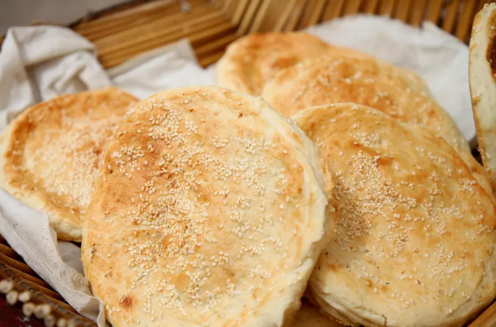

濮阳壮馍
濮阳壮馍，大过银盘
做好的壮馍，色泽金黄，外焦内嫩
羊肉大葱壮馍趁热吃
入口酥脆香甜
鲜而不膻，香而不腻

一般壮馍的直径都在50公分左右
厚度5至7公分不等
每个壮馍重达10斤以上
是干粮中的“巨无霸”
烤制食品中的“大将军”
裹凉皮
【濮阳裹凉皮】又叫卷凉皮
以往凉皮都是切丝拌黄瓜丝吃
濮阳裹凉皮直接拿整张凉皮

抹上芝麻酱
来点黄瓜丝
熟花生碎、面筋、香菜
直接裹起来，拿了就能走
站着不用筷子不用碗就能吃

一个裹好的凉皮要面皮晶莹发亮
隐约可以看见里面的黄瓜丝什么的
经济实惠又好吃
鸡蛋布袋
鸡蛋布袋，其实类似鸡蛋灌油条
一个“布袋”先入锅，炸到膨胀
戳个孔灌进鸡蛋再
继续接受高油温的洗礼
好的鸡蛋布袋趁热吃
外皮焦香酥脆，内容蛋香宜人
鸡蛋布袋被收入《中国烹饪百科全书》
因为长得像团鱼
因为长得像团鱼
1978年被认定为“名产风味小吃”
濮城滑脊汤
濮城滑脊汤是濮城镇的特色小吃之一
在濮洲，婚丧嫁娶，逢年过节，红白喜事
家家户户都喜欢煮上一道滑脊汤新
鲜的猪瘦肉腌制勾芡，肉片挂糊
下汤锅，就是滑脊了
重新烧水
加过了凉水的滑脊、生姜、蒜沫、葱丝、胡椒粉等等
并用精盐、味精、香油调好味
尤其加上紫菜和老陈醋
尤其加上紫菜和老陈醋
